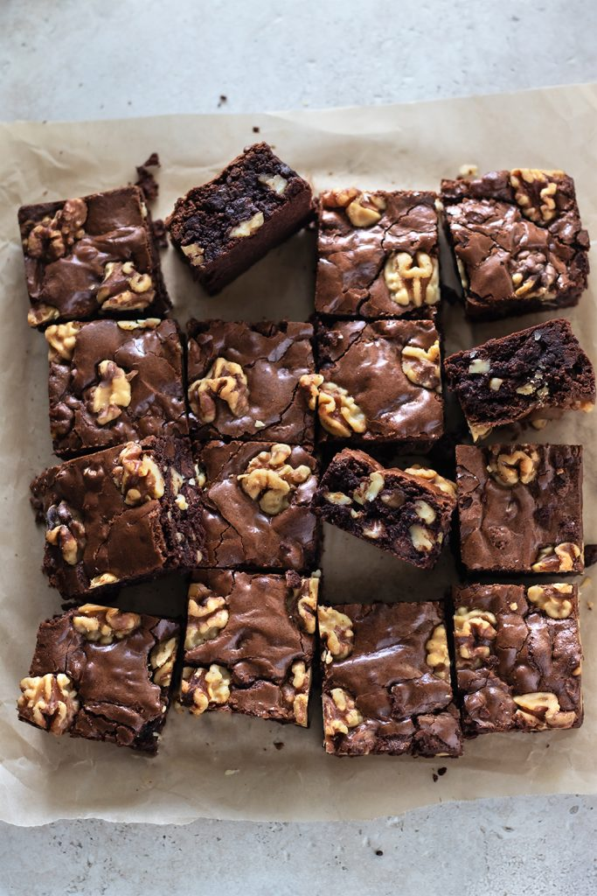

Walnut Brownies

Description
Experience the ultimate chocolate indulgence with our fudgy brownies, boasting a slightly crisp top and a moist, decadent center. Perfect with a scoop of vanilla ice cream
Cooking Time=35 mins
Serving: 12 brownies
Ingredients
- 1 cup white sugar
- ½ cup butter, melted
- 2 large eggs
- ½ cup self-rising flour
- ⅓ cup unsweetened cocoa powder
- ¼ teaspoon salt
- 1 teaspoon vanilla extract
- ½ cup chopped walnuts
Steps
- Preheat the oven to 350 degrees F (175 degrees C). Grease and flour an 8x8- or 9x9-inch baking pan.
- Beat together sugar and butter in a medium bowl. Add eggs and mix well.
- Combine flour, cocoa, and salt; stir into sugar mixture. Mix in vanilla, then stir in walnuts.
- Spread evenly into the prepared pan.
- Bake in the preheated oven until edges are firm, 25 to 30 minutes. Cool before cutting into squares.
Home